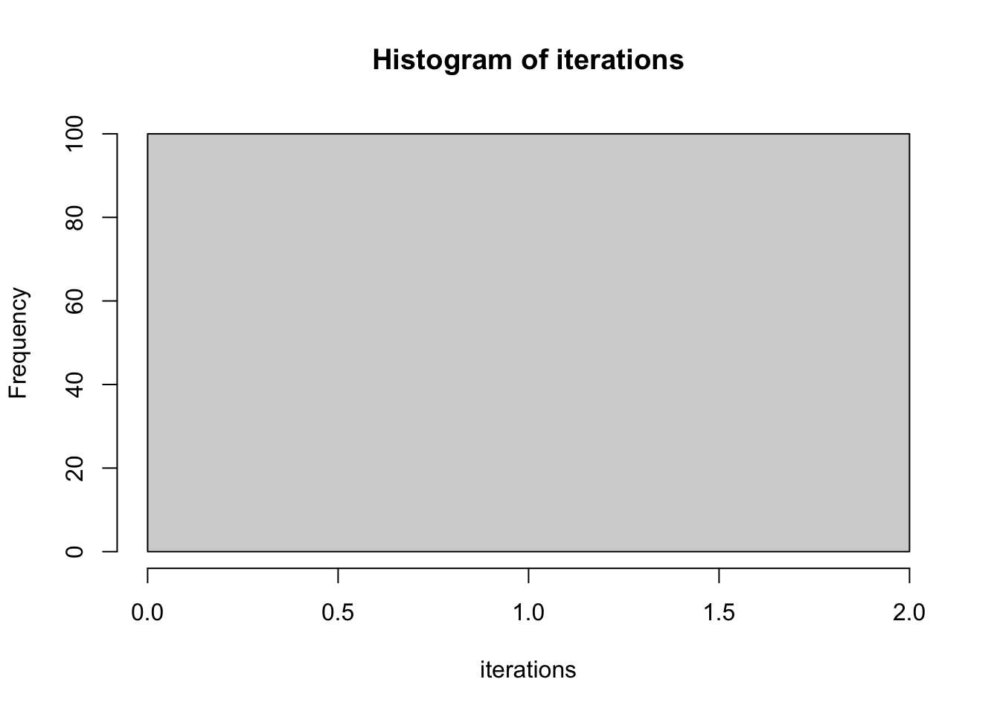
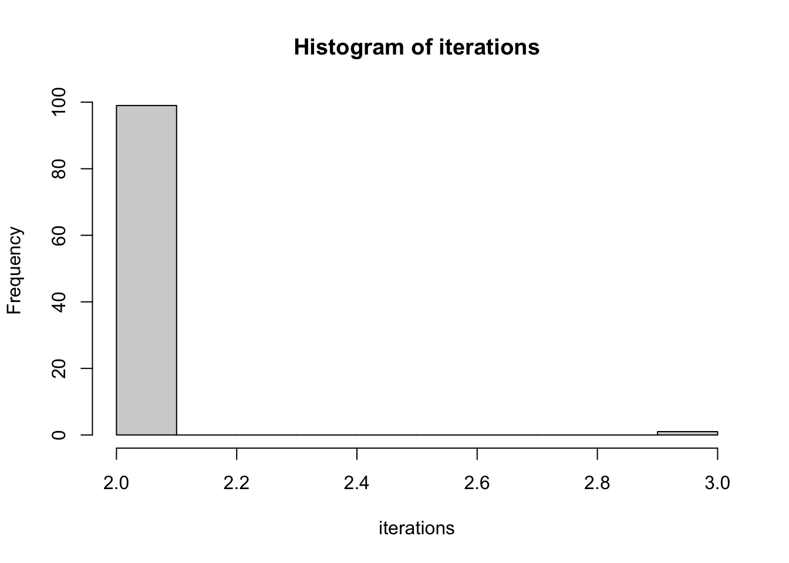
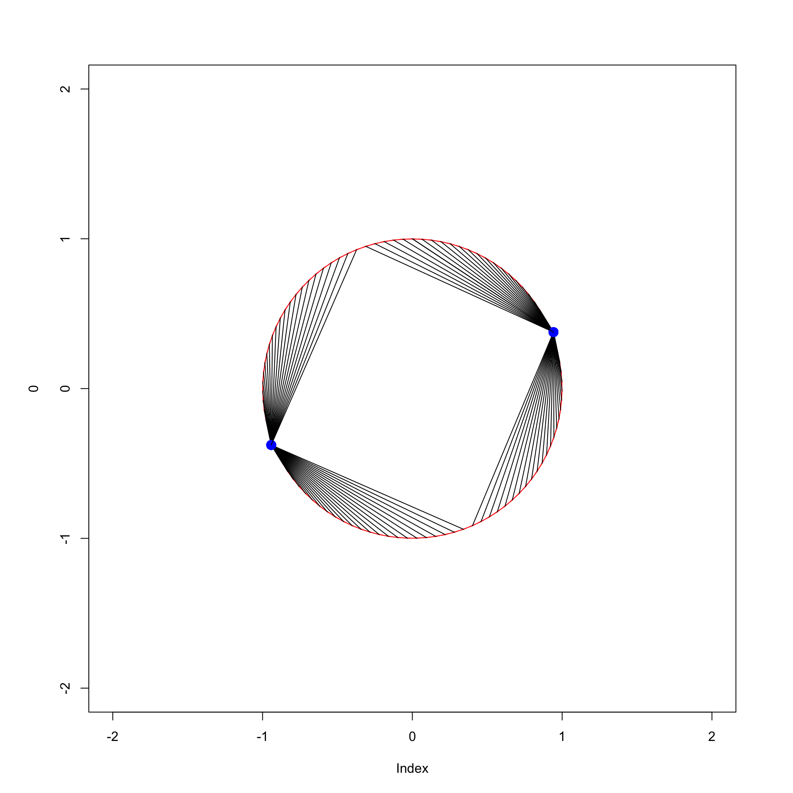

6 Minimization of Stress
6.1 Gradient Methods
The initial algorithms for nonmetric MDS Kruskal (1964b) and Guttman (1968) were gradient methods. Thus the gradient, or vector of partial derivatives, was computed in each iteration step, and a step was taken in the direction of the negative gradient (which is also known as the direction of steepest descent).
Informally, if \(f\) is differentiable at \(x\) then \(f(x+h)\approx f(x)+h'\mathcal{D}f(x)\) and the direction \(h\) that minimizes the diferential (the second term) is \(-\mathcal{D}f(x)/\|\mathcal{D}f(x)\|\), the normalized negative gradient. Although psychometricians had been in the business of minimizing least squares loss functions in the linear and bilinear case, this result for general nonlinear functions was new to them. And I, and probably many others, hungrily devoured the main optimization reference in Kruskal (1964b), which was the excellent early review by Spang (1962).
Kruskal’s paper also presents an elaborate step-size procedure, to determine how far we go in the negative gradient direction. In the long and convoluted paper Guttman (1968) there is an important contribution to gradient methods in basic MDS. Let’s ignore the complications arising from zero distances, which is after all what both Kruskal and Guttman do as well, and assume all distances at configuration \(X\) are positive. Then stress is differentiable at \(X\), with gradient
\[ \nabla\sigma(X)= -\sum_{i=1}^n\sum_{j=1}^nw_{ij}(\delta_{ij}-d_{ij}(X))\frac{1}{d_{ij}(X)} (e_i-e_j)(x_i-x_j)' \]
Geometrical interpretation - Gleason
Guttman C-matrix
Ramsay C-matrix
6.2 Initial Configurations
Random
L
Torgerson
Guttman
6.3 On MM Algorithms
The term majorization is used in mathematics in many different ways. In this book we use it as a general technique for the construction of stable iterative minimization algorithms. An iterative minimization algorithm is stable if it decreases the objective function in each iteration.
Ortega, Rheinboldt Weber Bohning, Lindsay Vosz, Eckart
Special cases of majorization had been around earlier, most notably the smacof algorithm for MDS and the EM algorithm for maximum likelihood with missing data, but in full generality majorization was first discussed in De Leeuw (1994) and Heiser (1995).
Majorization can be used to construct minimization methods, while minorization can construct maximization methods. This cleverly suggests to use the acronym MM algorithms for this class of techniques. An excellent comprehensive account of MM algorithms is Lange (2016). Another such account is slowly growing in one of the companion volumes in this series of personal research histories (De Leeuw (2016a)).
Here we just give a quick introduction to majorization. Suppose \(f\) is a real-valued function on \(X\subseteq\mathbb{R}^n\). Then a real-valued function \(g\) on \(X\otimes X\) is said to majorize \(f\) on \(X\) if
\[\begin{equation} g(x,y)\geq f(x)\qquad\forall (x,y)\in X\otimes X, \tag{6.1} \end{equation}\]
and
\[\begin{equation} g(y,y)=f(y)\qquad\forall y\in X. \tag{6.2} \end{equation}\]
Thus for each \(y\in X\) the function \(g(\bullet,y)\) lies above \(f\), and it touches \(f\) from above at \(x=y\). Majorization is strict if \(g(x,y)=f(x)\) if and only if \(x=y\), i.e. if \(y\) is the only point in \(X\) where \(g(\bullet,y)\) and \(f\) touch.
A majorization algorithm to minimize \(f\) on \(X\) starts with an initial estimate, and then updates the estimate in iteration \(k\) by
\[\begin{equation} x^{(k+1)}\in\mathop{\text{argmin}}_{x\in X}g(x,x^{(k)}), \tag{6.3} \end{equation}\]
with the understanding that the algorithms stops when \(x^{(k)}\in\mathop{\text{argmin}}_{x\in X}g(x,x^{(k)})\).
If we do not stop we have an infinite sequence satisfying the sandwich inequality
\[\begin{equation} f(x^{(k+1)})\leq g(x^{(k+1)},x^{(k)})\leq g(x^{(k)},x^{(k)})=f(x^{(k)}). \tag{6.4} \end{equation}\]
The first inequality in this chain comes from (6.1). It is strict when majorization is strict. The second inequality comes from (6.3), and it is strict if \(g(\bullet,y)\) has a unique minimum on \(X\) for each \(y\).
6.4 Smacof Algorithm
The basic smacof algorithm, which is the main building block for most of the MDS techniques discussed in this book, updates the configuration \(X^{(k)}\) in iteration \(k\) by
\[\begin{equation} X^{(k+1)}=\mathfrak{G}(X^{(k)})=V^+B(X^{(k)})X^{(k)}. \tag{6.5} \end{equation}\]
so that first \(X^{(1)}=\mathfrak{G}(X^{(0)})\), then \(X^{(2)}=\mathfrak{G}(X^{(1)})=\mathfrak{G}(\mathfrak{G}(X^{(0)}))\), and generally \(X^{(k)}=\mathfrak{G}^k(X^{0}),\) where \(\mathfrak{G}^k\) is the k-times composition (or iteration) of \(\mathfrak{G}.\)
We shall show in this chapter that as \(k\rightarrow\infty\) both
\(\sigma(X^{(k+1)})-\sigma(X^{(k)})\rightarrow 0\), and
\(\eta^2(X^{(k)}-X^{(k+1)})=(X^{(k+1)}-X^{(k)})'V(X^{(k+1)}-X^{(k)})\rightarrow 0\).
The iterations stop either if \(\sigma(X^{(k)})-\sigma(X^{(k+1)})<\epsilon\) or if
\(\eta^2(X^{(k)}-X^{(k+1)})<\epsilon\), where the \(\epsilon\) are small cut-off numbers chosen by the user, or if we reach a user-defined maximum number of iterations, and we give up on convergence. The user also chooses if the stop criterion is based on function value changes or configuration changes.
Some quick remarks on implementation. We only have to compute \(V^+\) once, but premultiplying by a full symmetric matrix in each iteration does add quite a few multiplications to the algorithm. If all \(w_{ij}\) are one, then \(V^+=\frac{1}{n}J\) and thus \(\mathfrak{G}(X^{(k)})=\frac{1}{n}B(X^{(k)})X^{(k)}\). In fact we do not even have to carry out this division by \(n\), because the basic algorithm is self scaling. which means in this context that \(\mathfrak{G}(\alpha X)=\mathfrak{G}(X)\) for all \(\alpha\geq 0\).
6.4.1 Global Convergence
The iterations in (6.5) start at some \(X^{(0)}\) and then generate five sequences of non-negative numbers. Define \(\lambda(X):=\rho(X)/\eta(X)\) and \(\gamma(X):=\eta^2(X-\mathfrak{G}(X))\). The five sequences we will look at are
\[\begin{align} \begin{split} \sigma_k&:=\sigma(X^{(k)}),\\ \rho_k&:=\rho(X^{(k)}),\\ \eta_k&:=\eta(X^{(k)}),\\ \lambda_k&:=\lambda(X^{(k)}),\\ \gamma_k&:=\gamma(X^{(k)}), \end{split} \tag{6.6} \end{align}\]
Depend on \(X^{(0)}\)
Zangwill
Argyros
6.4.2 From the CS Inequality
Theorem 6.1
\(\sigma_k\) is a decreasing sequence, bounded below by 0.
\(\rho_k\), \(\eta_k\), amd \(\lambda_k\) are increasing sequences, bounded above by 1.
\(\gamma_k\) is a null-sequence.
To prove convergence of these sequences we slightly modify and extend the proofs in De Leeuw (1977a) and De Leeuw and Heiser (1977) (while I say to myself: that’s 44 years ago).
For each \(X\in\mathbb{R}^{n\times p}\) we have \(\rho(X)\leq\eta(X)\) and thus \(\lambda(X)\leq 1\).
For each \(X,Y\in\mathbb{R}^{n\times p}\) we have \(\rho(X)\geq\text{tr}\ X'B(Y)Y\) and thus \(\rho(X)\geq\text{tr}\ X'V\mathfrak{G}(Y)\). Taking \(X=\mathfrak{G}(Y)\) we see that \(\rho(X)\geq\eta^2(\mathfrak{G}(Y))\). Now \(\sigma(\mathfrak{G}(Y))=1-2\rho(\mathfrak{G}(Y))+\eta^2(\mathfrak{G}(Y))\leq 1-\eta^2(\mathfrak{G}(Y))\) and thus for all \(X\) \(\eta^2(\mathfrak{G}(X)) \leq 1\).
For each \(X\in\mathbb{R}^{n\times p}\) we have \(\rho(X)=\text{tr}\ X'B(X)X\) and thus \(\rho(X)\leq\eta(X)\eta(\mathfrak{G}(X))\) and thus \(\lambda(X)\leq\eta(\mathfrak{G}(X))\)
\[ \rho(X^{(k)})=\text{tr}\ \{X^{(k)}\}'VX^{(k+1)}\leq\eta(X^{(k)})\eta(X^{(k+1)}), \]
\[ \rho(X^{(k+1)})\geq\text{tr}\ \{X^{(k+1)}\}'B(X^{(k)})X^{(k)}=\eta^{2}(X^{(k+1)}), \]
\[ \eta(X^{(k)})\leq\lambda(X^{(k)})\leq\eta(X^{(k+1)}) \]
and
\[ \rho(X^{(k)})\leq\frac{\eta(X^{(k)}}{X^{(k+1)}}\rho(X^{(k+1)})\leq\rho(X^{(k+1)}) \]
6.4.3 From Majorization
Smacof is based on the majorization, valid for all configurations \(X\) and \(Y\),
\[\begin{equation} \sigma(X)\leq 1+\eta^2(X-\mathfrak{G}(Y))-\eta^2(\mathfrak{G}(Y)), \tag{6.7} \end{equation}\]
with equality if and only if \(X\propto Y\). If \(Y=\alpha X\) for some \(\alpha\) then \[\begin{equation} \sigma(X)=1+\eta^2(X-\mathfrak{G}(Y))-\eta^2(\mathfrak{G}(Y)), \tag{6.8} \end{equation}\] and specifically we have (6.8) if \(Y=X\).
Now suppose we have an \(Y\) with \(Y\not=\mathfrak{G}(Y)\). If \(\eta^2(X-\mathfrak{G}(Y))\leq\eta^2(Y-\mathfrak{G}(Y))\) then
\[\begin{align} \begin{split} \sigma(X)%\leq 1+\eta^2(X-\mathfrak{G}(Y))-\eta^2(\mathfrak{G}(Y))\leq\\ &\leq 1+\eta^2(Y-\mathfrak{G}(Y))-\eta^2(\mathfrak{G}(Y))=\sigma(Y) \end{split} \tag{6.9} \end{align}\]
The obvious choice for \(X\) is \(X=\mathfrak{G}(Y)\), which makes \(\eta^2(X-\mathfrak{G}(Y))=0\), and thus
\[\begin{equation} \sigma(X)\leq 1-\eta^2(\mathfrak{G}(Y))< 1+\eta^2(Y-\mathfrak{G}(Y))-\eta^2(\mathfrak{G}(Y))=\sigma(Y) \tag{6.10} \end{equation}\]
6.4.4 Component Rotated Smacof
Consider the modified smacof iterations \(\tilde X^{(k+1)}=X^{(k+1)}L^{(k+1)}\), where \(L^{(k+1)}\) are the normalized eigenvectors of \(\{X^{(k+1)}\}^TVX^{(k+1)}\). Then
\[ \sigma(\tilde X^{(k)})=\sigma(X^{(k)}) \] Thus the modified update produces the same sequence of stress values as the basic update. Also \[ \mathfrak{G}(\tilde X^{(k)})=\mathfrak{G}(X^{(k)})L^{(k)} \]
Thus \(\tilde X^{(k)}\) and \(X^{(k)}\) differ by a rotation for each \(k\). It follows that we can actually compute \(\tilde X^{(k)}\) from the basic sequence \(X^{(k)}\) by rotating the \(X^{(k)}\) to principal components. Specifically if \(X_\infty\) is a subsequential limit of \(X^{(k)}\) then the corresponding limit of \(\tilde X^{(k)}\) is \(X_\infty\) rotated to principal components. Modifying the intermediate updates is just a waste of time, we can simply rotate the final smacof solution. And we should, as we explain in the next section, 6.4.5.
6.4.5 Local Convergence
\[ \mathcal{D}\mathfrak{G}(X)(Y)=V^+\left\{B(X)Y-\mathop{\sum\sum}_{1\leq i<j\leq n} w_{ij}\frac{\delta_{ij}}{d_{ij}(X)}\left(\frac{\text{tr}\ Y'A_{ij}X}{d_{ij}^2(X)}\right)A_{ij}\right\} \]
For any X: one zero eigenvalue \(\mathcal{D}\mathfrak{G}(X)(X)=0\)
If on \(\mathbb{R}^{n\times p}\) then an additional \(p\) zero eigenvalues \(\mathcal{D}\mathfrak{G}(X)(e\mu^T)=0\)
For \(X=\mathfrak{G}(X)\) and \(M\) anti-symmetric: \(\frac12 p(p-1)E\) unit eigenvalues \(\mathcal{D}\mathfrak{G}(X)(XM)=\mathfrak{G}(X)M=XM\)
6.4.5.1 Rotation to PC
We suppose the configfuration \(X\) is \(n\times p\), with rank \(p\). If the singular value decomposition is \(X=K\Lambda L'\) then the rotation to principle components is \(\Gamma(X):=K\Lambda=XL\). Thus \(\mathcal{D}\Gamma(X)(Y)=YL+X\mathcal{D}L(X)(Y)\). So we need to compute \(\mathcal{D}L(X)\), with \(L\) the right singular vectors of \(X\), i.e. the eigenvectors of \(X^TX\). We use the methods and results from De Leeuw (2007b), which were applied to similar problems in De Leeuw (2008b), De Leeuw and Sorenson (2012), and De Leeuw (2016b).
Theorem 6.2 If the \(n\times p\) matrix has rank \(p\), singular value decomposition \(X=K\Lambda L^T\), with all singular values different, then \(\Gamma(X+\Delta)=\Gamma(X)+\Delta L+XLM+o(\|\Delta\|)\), where \(M\) is antisymmetric with off-diagonal elements
\[\begin{equation} m_{ij}=\frac{\lambda_is_{ij}+\lambda_js_{ji}}{\lambda_i^2-\lambda_j^2}. \tag{6.11} \end{equation}\]Proof. The proof involves computing the derivatives of the singular value decomposition of \(X\), which is defined by the equations
\[\begin{align} XL&=K\Lambda,\tag{6.12}\\ X^TK&=L\Lambda,\tag{6.13}\\ K^TK&=I,\tag{6.14}\\ L^TL&=LL^T=I.\tag{6.15} \end{align}\]
We now perturb \(X\) to \(X+\Delta\), which perturbs \(L\) to \(L+L_\Delta+o(\|\Delta\|)\), \(K\) to \(K+K_\Delta+o(\|\Delta\|)\), and \(\Lambda\) to \(\Lambda+\Lambda_\Delta+o(\|\Delta\|)\). Substutute this into the four SVD equations for \(X+\Delta\) and keep the linear terms.
\[\begin{align} XL_\Delta+\Delta L&=K_\Delta\Lambda+K\Lambda_\Delta,\tag{6.16}\\ X^TK_\Delta+\Delta^TK&=L_\Delta\Lambda+L\Lambda_\Delta,\tag{6.17}\\ L_\Delta^TL+L^TL_\Delta&=0,\tag{6.18}\\ K_\Delta^TK+K^TK_\Delta&=0.\tag{6.19} \end{align}\]
Define \(M:=L^TL_\Delta\) and \(N:=K^TK_\Delta\). Then equations (6.18) and (6.19) say that \(M\) and \(N\) are antisymmetric. Also define \(S:=K^T\Delta L\). Premultiplying equation (6.16) by \(K^T\) and (6.17) by \(L^T\) gives
\[\begin{align} \Lambda M+S&=N\Lambda+\Lambda_\Delta,\tag{6.20}\\ \Lambda N+S^T&=M\Lambda+\Lambda_\Delta.\tag{6.21} \end{align}\]
Either of these two equations gives, using the antisymmetry, and thus hollowness, of \(M\) and \(N\), that \(\Lambda_\Delta=\text{diag}(S)\). Define the hollow matrix \(U:=S-\text{diag}(S)\). Then
\[\begin{align} \Lambda M-N\Lambda&=U,\tag{6.22}\\ \Lambda N-M\Lambda&=U^T.\tag{6.23} \end{align}\]
Premultiply (6.22) and postmultiply (6.23) by \(\Lambda\).
\[\begin{align} \Lambda^2 M-\Lambda N\Lambda&=\Lambda U,\tag{6.24}\\ \Lambda N\Lambda-M\Lambda^2&=U^T\Lambda.\tag{6.25} \end{align}\]
If we add these two equations we can solve for the off-diagonal elements of \(M\) and find the expression in the theorem. Since \(L_\Delta=LM\) this completes the proof.
6.4.6 Negative Dissimilarities
\[\begin{equation} \sigma(X)=1-\sum_{k\in\mathcal{K}_{1+}} w_k\delta_kd_k(X) +\sum_{k\in\mathcal{K}_{1-}} w_k|\delta_k|d_k(X)+\frac12\sum_{k\in\mathcal{K}} w_kd_k^2(X)). \tag{6.26} \end{equation}\]
Split rho
6.4.7 Unweighting
Consider the problem of minimizing a least squares loss function, defined as \(f(x):=(x-y)'W(x-y)\) over \(x\) in some set \(X\), where \(W\) is a symmetric weight matrix. Sometimes \(W\) complicates the problem, maybe because it is too big, too full, singular, or even indefinite. We will use iterative majorization to work around \(W\). See also Kiers (1997) and Groenen, Giaquinto, and Kiers (2003).
Suppose \(z\) is another element of \(X\). Think of it as the current best approximation to \(y\) that we have, which we want to improve. Then
\[\begin{align} \begin{split} f(x)&=(x-y)'W(x-y)\\ &=((x-z)+(z-y))'W((x-z)+(z-y))\\ &=f(z)+2(x-z)'W(z-y)+(x-z)'W(x-z) \end{split} \tag{6.27} \end{align}\]
Now choose a non-singular \(V\) such that \(W\lesssim V\) and define \(u:=V^{-1}W(z-y)\). Then we have the majorization
\[\begin{equation} f(x)\leq f(z)+2(x-z)'W(z-y)+(x-z)'V(x-z)=\\ f(z)+2(x-z)'Vu+(x-z)'V(x-z)=\\ f(z)+(x-(z-u))'V(x-(z-u))-u'Vu. \tag{6.28} \end{equation}\]
Here are some ways to choose \(V\). We use \(\lambda_{\text{max}}(W)\) and \(\lambda_{\text{min}}(W)\) for the largest and smallest eigenvalues of the symmetric matrix \(W\).
For any \(W\) we can choose \(V=\lambda_{\text{max}}(W)I\). Or, more generally, \(V=\lambda_{\text{max}}(D^{-1}W)D\) for any positive definite \(D\). If \(W\) is singular we can choose \(V=W+\epsilon D\) for any positive definite \(D\). And in the unlikely case that \(W\) is indefinite we can choose \(V=W+(\epsilon-\lambda_{\text{min}}(W))I\). But if \(W\) is indefinite we have more serious problems.
In appendix A.1.18 the R function lsuw(), implements the iterative majorization algorithm minimizing \((x-y)'W(x-y)\) over \(x\) in some set \(X\). One of the parameters of lsuw() is a function proj(), which projects a vector on \(X\) in the metric define by \(V\). The projection could be on the positive orthant, on a cone with isotone vectors, on a linear subspace, on a sphere, on a set of low-rank matrices, and so on.
As an example choose \(W\) as a banded matrix of order 10 with \(w_{ij}=1\) if \(|i-j|\leq 3\) and \(i\not= j\), \(w_{ij}=i\) if \(i=j\), and \(w_{ij}=0\) otherwise. We require all 10 elements of \(x\) to be the same, and we use \(V=\lambda_{\text{max}}(W)I\) (the default).
The iterations are
w<-ifelse(outer(1:10,1:10,function(x,y) abs(x-y) <= 3),1,0)
w <- w + diag(0:9)
h1 <- lsuw(1:10, w, projeq)If we use \(\lambda_{\text{max}}(D^{-1}W)D\) with \(D=\text{diag}(W)\) for \(V\) we see the following majorization iterations.
d <- diag(w)
v <- max(eigen((1 / d) * w)$values) * diag(d)
h2 <- lsuw(1:10, w, v = v, projeq)So the second method of choosing \(V\) is a tiny bit less efficient in this case, but it really does not make much of a difference. In both cases \(x\) is 6.3009558, 6.3009558, 6.3009558, 6.3009558, 6.3009558, 6.3009558, 6.3009558, 6.3009558, 6.3009558, 6.3009558 with function value 595.6699029.
Apply to stress and to
\[ \sigma_c(X):=\mathop{\sum\sum}_{1\leq i<j\leq n}\mathop{\sum\sum}_{1\leq k<l\leq n}w_{ijkl}(\delta_{ij}-d_{ij}(X))(\delta_{kl}-d_{kl}(X)) \] If \(A\leq B\) (elementwise) then \(\sum\sum(b_{ij}-a_{ij})(x_i-x_j)^2\geq 0\) and thus \(V(A)\lesssim V(B)\).
6.4.8 Smacof in Coefficient Space
[## Newton in MDS
6.5 Regions of Attraction
delta <- as.matrix (dist (diag (4)))
delta <- delta * sqrt (2 / sum (delta ^ 2))6.5.1 Smacof
We use the smacof() function from the code in the appendix with 100 different starting points of \(\theta\), equally spaced on the circle. Figure 6.1 is a histogram of the number of smacof iterations to convergence within 1e-15. In all cases smacof converges to a local minimum in coefficient space, never to a saddle point. Figure 6.2 shows which local minima are reached from the different starting points. This shows, more or less contrary to what Trosset and Mathar (1997) suggests, that non-global minima can indeed be points of attraction for smacof iterations.

Figure 6.1: Histogram Number of Smacof Iterations

Figure 6.2: Path Endpoints of Smacof Iterations
6.5.2 Newton
We repeat the same exercise with Newton’s method, which converges from all 100 starting points. In higher dimensions we may not be so lucky. The histogram of
iteration counts is in figure 6.3. It shows in this example that smacof needs about 10 times the number of iterations that Newton needs. Because smacof iterations are much less expensive than Newton ones, this does not really say much about computing times. If we look at figure 6.4 we see the problem with non-safeguarded Newton. Although we have fast convergence from all 100 starting points, Newton converges to a saddle point in 0 cases.

Figure 6.3: Histogram Number of Newton Iterations

Figure 6.4: Path Endpoints of Newton Iterations
Figure 6.5: Jan de Leeuw, Gilbert Saporta, Yutaka Kanaka in Kolkata, December 1985